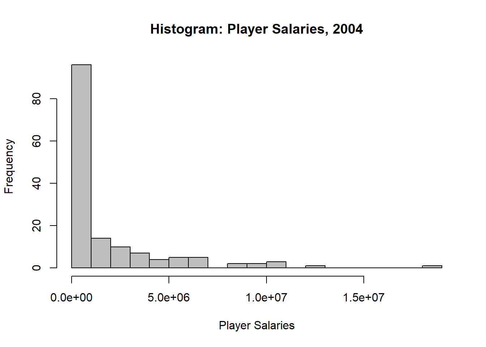

Simple random sampling (SRS) is the most basic probability sampling design, and it is also used in combination with other designs like stratified and cluster sampling.
TipDefinition: Simple Random Sample
A simple random sample (SRS)
This definition implies
Specifically, the inclusion probability for any sampling unit is
Note that the converse is not true!
This is called an equal probability design, and the SRS is only one example of equal probability design. Some stratified and cluster sampling designs also have an equal inclusion probability for all sampling units.
3.1 SRS: Selecting the Sample
There are two types of selection procedures, depending on whether or not the sampling units are returned to the population after they have been drawn:
SRSWR
SRSWOR
Conceptually, an SRS (SRSWOR) is selected as follows:
\(\vdots\)
This is useful to see why each unit has the same inclusion probability.
But, this is not an especially realistic way to pick a sample. In practice, an SRS (SRSWOR) is selected as follows:
Create a sampling frame
Determine a selection procedure that performs SRSWOR
A sampling unit is included in the sample if its index corresponds to one of the \(n\) random numbers selected.
So what are some selection procedures that perform SRSWOR?
R packages: Need to install and load the package sampling, then sample<-srswor(n,N). You can then use the getdata function to extract the sample from the population.
Example: The dataset baseball.csv in Canvas contains statistics on 797 baseball players from the rosters of all major league teams in November, 2004. We’ll treat this as our population, and take an SRS of 150 players.
First, we’ll read the data into R, print out the first few rows, and check the size of the population:
hist(baseballsrs$salary,breaks=20,col="gray",xlab="Player Salaries",main="Histogram: Player Salaries, 2004")

3.2 Estimation from a SRS
Once we’ve selected our sample, we can use it to estimate characteristics of the population, along with their standard errors.
3.2.1 Estimating a population mean
As a reminder, the population mean is
A natural estimator of \(\bar y_{\mathcal{U}}\) using a SRS of sample size \(n\) is the sample mean:
Example: In our sample of \(n=150\) baseball players, the mean salary is
mean.salary<-mean(baseballsrs$salary)mean.salary
[1] 1993886
Because we have access to the entire population, we can check to see how our sample mean compares to the population mean.
mean.pop<-mean(baseball$salary)mean.pop
[1] 2497669
What happens if we take a different sample? Let’s try a few. What do we need to change in R?
It turns out that with simple random sampling, the sample mean is an unbiased estimator of the population mean. That is,
As noted in Chapter 2, the finite population variance is
Under simple random sampling, the sample variance \(s^2\)
is an unbiased estimator of \(\sigma^2\). However, if we want to use \(\bar y\) to draw conclusions about the population, we need the variance of \(\bar y\). It turns out that under simple random sampling,
(Proof: see section 2.9)
But, we generally don’t know \(\sigma^2\), so we’ll use an unbiased estimator of Var\((\bar y)\):
The square root of the variance of the estimator is its standard error (fun fact: standard errors are not usually unbiased).
This quantity
is called the finite population correction factor, or fpc for short.
Keep in mind that we’ve sampled \(\frac{n}{N}\) of the population. This is called the sampling fraction. Why does the sampling fraction matter?
Example: For the baseball SRS
We know:
With the fpc:
var.salary<-var(baseballsrs$salary)var.salary
[1] 8.804137e+12
se.mean<-sqrt((var.salary/n)*(1-(n/N)))se.mean
[1] 218283.4
Without the fpc:
se.nofpc<-sqrt(var.salary/n)se.nofpc
[1] 242269
What if we had sampled fewer players? Let’s try 30 instead of 150. Now:
We may also be interested in a measure of relative variability (this will be most helpful in the future for selecting sample size). The coefficient of variation (CV) of \(\bar y\) is
The CV does not depend on the units of measurement. We can estimate the CV using
Example: For the baseball SRS, the estimated CV is
CV<-se.mean/mean.salaryCV
[1] 0.1094764
The salary data are quite skewed, so we should also report the median:
med.salary<-median(baseballsrs$salary)med.salary
[1] 525000
3.2.2 Estimating a population total
As a reminder, the population total is
We can also express the population total as a function of the population mean
It’s then natural to estimate \(t\) using
It’s easy to see that
The CV doesn’t change because the \(N\)s cancel!
Example: Let’s estimate the total number of runs across the 2004 season, based on our SRS of \(n=150\) players. First, let’s start with the mean runs
Earlier, we defined the inclusion probability\((\pi_i)\) for each sampling unit. This is the probability that unit \(i\) is included in the sample. In probability samples, the inclusion probabilities are used to calculate \(\bar y\) and \(\hat t\).
To see how they are used, we need a new concept–the sampling weight.
TipDefinition: Sampling weight
The sampling weight
For example, with the baseball data
The sampling weight is also sometimes called the design weight.
For simple random samples, all sampling units have the same inclusion probability:
This means that all sampling units also have the same sampling weight:
Because all units have the same sampling weight, an SRS is a self-weighting sample. However, just because a sample is self-weighting does not mean it’s an SRS. It’s possible to have a sample design where every unit has the same inclusion probability, but not all possible samples have the same chance to be selected.
As mentioned above, we can use the sampling weights \(w_i\) to calculate \(\bar y\) and \(\hat t\) (and, thus, \(\hat p\)).
For an SRS, \(w_i = N/n\), so
We didn’t need to use them in baseball example to get \(\bar y\), \(\hat t\), and \(\hat p\). But, survey software packages in R and SAS are written to estimate the parameters for any probability sampling design so they require the data set include sampling weights.
Example: Let’s add the sampling weights to the baseball data.
The sampling weight is \(N/n = 797/150 = 5.31333\), indicating that player in our SRS represents 5.31333 players in the population of all 2004 MLB players.
We can then use the sampling weights to calculate the same estimates we did earlier, using a built in function in the survey package in R. We first have to define the survey design, using the svydesign function:
R tells us this is an Independent Sampling Design, which means there are no clusters or strata.
Now that we’ve set up the sampling design in R, we can use it calculate the same estimates we did before with a lot less code. We can use the functions svymean and svytotal to get \(\bar y\) and \(\hat t\), respectively, along with their standard errors. The generic code is:
ybar<-svymean(~var_interest, design)
that<-svytotal(~var_interest, design)
Example: For estimating average salary and total runs in 2004 we’d use:
salmean<-svymean(~salary,baseballdesign)salmean
mean SE
salary 1993886 218283
runtotal<-svytotal(~run,baseballdesign)runtotal
total SE
run 19442 1852.5
The same values we got before. Since \(\hat p\) is really a mean, we can also use svymean to get \(\hat p\) and its SE:
hrprop<-svymean(~hr,baseballdesign)hrprop
mean SE
hr 0.50667 0.0369
Again, the same values we got before.
3.4 Confidence Intervals
Once we select the random sample and use the resulting data to construct estimates of a population value (mean, total, proportion), the next step is typically to make some statement about the accuracy of the estimate. This is most often accomplished by constructing a confidence interval for the true population value.
The confidence intervals we’ll construct have the same interpretation as those we constructed in classes like STAT 218, 318, 102, 212, 380.
TipDefinition: Confidence interval
A confidence interval
The expected proportion of intervals containing the true population value is the coverage probability. So, for example, an interval with a coverage probability of 0.95 means
But, there are differences. In probability sampling with a finite population, only a finite number of possible samples exist, and we know the probability with which each sample will be chosen. This means we could generate all possible samples, and all possible intervals. From these, we could then observe how many capture the population value, and get the exact coverage probability.
In real life, we can’t do this
But, the confidence intervals we used in STAT 218/318/102/212/380 (which assumed an infinite population) relied on asymptotic theory–what happens as \(n \rightarrow \infty\). For example, we know and love the Central Limit Theorem:
But we’ve only got a finite population! How can we use a result about \(n \rightarrow \infty\) when we’ve got a finite population?
Happily, there is a version of the Central Limit Theorem for SRSWOR, due to Hájek (1960). If some conditions that are way too technical for us to talk about are true and if
then
This means we could use this confidence interval for the population mean:
Again, we don’t know \(\sigma\)! We could substitute in \(s\) and use the standard error. And, in practice, we typically substitute \(t_{\alpha/2, df=n-1}\) for \(z_{\alpha/2}\). In small samples, it’s more conservative (wider confidence intervals) and with large samples \(t_{\alpha/2,n-1} \approx z_{\alpha/2}\) anyway. So, we’ll use the interval
to calculate a \((1-\alpha)\times 100\%\) confidence interval for the from population mean from an SRS.
In general,
We have the same question come up that comes with the regular CLT: how large is large enough for \(n\) (and \(N\)?) It depends
Some rules of thumb:
If the population is approximately normal,
Sugden et al. (2000) recommended the minimum sample size
Another way to check whether the distribution is too skewed to use the CLT is bootstrapping!
Example: Back to the baseball data. Let’s get a 95% confidence interval for the mean salary of players in 2004. We saw already that based on our SRS of \(n=150\), \(\bar y =\) 1993886 and SE\((\bar y) =\) 218283.4. We can use the qt(alpha/2,df) function to get the \(t\) multiplier in the confidence interval.
Let’s try a 95% confidence interval for the proportion players with at least one home run. We know \(\hat p =\) 0.5066667 and SE\((\hat p) =\) 0.036903.
It turns out the survey package has confidence intervals built in to the svymean and svytotal functions. Once we have created an object from either function, we can pass that object into the confint function. Here’s the syntax:
confint(object,df= , level= )
So we could use
salmean<-svymean(~salary, baseballdesign)salmean
mean SE
salary 1993886 218283
confint(salmean,df=n-1, level=0.95)
2.5 % 97.5 %
salary 1562555 2425217
For more practice:
draw a new sample of size \(n=150\) (with no seed or pick your own seed, so everyone gets a different sample) from the baseball data set
use svymean to a 90% confidence interval for the mean number of errors committed by a player in 2004
3.5 Sample Size
Often the first question that comes up when designing a survey is how many observations are needed. This is often a pretty complicated question, and involves balancing the objectives of the study with the available budget. You also must consider that most studies have multiple characteristics being measured on each observation unit.
If the researcher can narrow down the most important variables to focus on one or two, there are four basic steps:
Decide how much precision you need (basically, how much variability are you willing to live with in the estimates)
Find an equation involving the sample size \(n\) and the precision (i.e., the margin of error)
Estimate anything you need to and solve for \(n\) (usually an estimate of the expected variance)
Go back to square one when the \(n\) turns out to be enormous.
We’ll go through these steps one by one.
1. Decide how much precision you need
2. Find an equation involving \(n\) and the precision
Let’s start by assuming the fpc is neglible (i.e., we have an infinite population)
Now, let’s assume \(\frac{n_0}{N} < 1\) (why is this a reasonable assumption?)
So, the sample size we need is
We could also consider finding the sample size to achieve a specified relative precision, call it \(r\). The relative precision measures the distance between the estimate and the true value, scaled by the true value.
Sometimes we can calculate the required \(n\) at this stage!
Example: Suppose we want to estimate the proportion of 2004 baseball players that had at least one error, and we want to be able to calculate a 95% confidence interval and have a margin of error of 0.04.
3. Estimate anything you need to and solve for \(n\)
This usually involves estimating (guessing) the expected variance. Why didn’t need to do this in the baseball example above?
How can we obtain the expected variance?
Another option is to use the CV for a sample of size 1: \(\sigma/\bar y_{\mathcal{U}}\)
If there are no other options, guess. An educated guess may use the suspected distribution of the data.
4: Go back to square one when the \(n\) turns out to be enormous
Example: A botanical researchers wishes to design a survey to estimate the number of birch trees in a study area. The study area has been divided into 1000 plots. From previous experience, the variance in the number of trees per plot is about \(\sigma^2 \approx 45\). What sample size should be used to estimate the total number of trees in the study area to within 500 trees of the true value with 95% confidence?
To within 1000 trees?
To within 2000 trees?
Does the finite population correction factor matter here? How do you know?
3.6 Systematic Sampling
Suppose we have a population with \(N\) units, and the units are numbered from 1 to \(N\) in some order. To select a sample of \(n\) units, we:
For example,
Note that
This type of sampling design is called a systematic sample
Why isn’t this a SRS?
When will a systematic sample behave like an SRS?
When will a systematic sample not behave like an SRS?
There are a couple of advantages over the SRS:
3.7 Considerations for Choosing an SRS Design
When Shouldn’t You Use an SRS?
You really should be carrying out a designed experiment
You don’t have a sampling frame or it’s too expensive